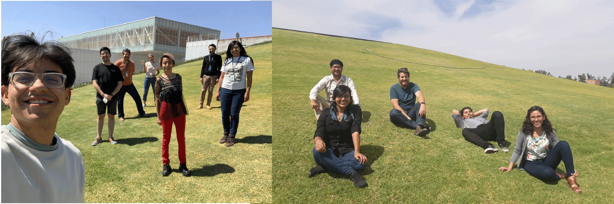
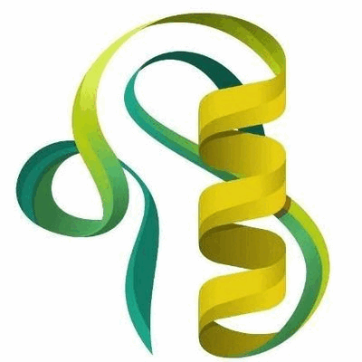

Current team 
Postdocs
Natalia Lorena Cancelarich, 2023-present.
Machine learning-guided design of frog-derived non-hemolytic AMPs (with Mariela Marani, IPEEC-CONICET, Argentina)
Alumni
Research Assistant
María Teresa Carrillo Rayas, PhD - 2022-2024.
Ph.D. students
Mariana del Carmen Aguilera Puga, 2018-2024.
Predicting mechanisms of action of antimicrobial peptides using AI.
Juan Carlos Guido Patiño, 2019-2024.
Proteo-transcriptomic studies of Mexican ant venoms.
Julio César Lopez Juarez, 2019-2023*.
Structural bioinformatics applied to venomics.
Rafael González-Castro, 2019-2021*.
Heterologous production of cysteine-rich peptides in N. benthamiana. (Co-director: Miguel Gomez Lim, CINVESTAV)
Master students
Luis Ruiz Rios, 2022-2024.
Biosynthesis of C-nucleosides in Caulobacter species. (Co-director: Francisco Barona Gomez, now at Leiden University)
Analia Pastrana, 2022-2024.
Validation of AMP databases. (Co-director: Fernanda Mendez, Universidad Austral, Argentina).
Jesús Gabriel Osuna Osuna, 2022-2023.
Finding hymenopteran venom toxins against Candidiasis. (Co-director: Eugenio Mancera Ramos, CINVESTAV).
Victor Daniel Aldas Bulos, 2021-2022.
Algorithm bias in antimicrobial peptides
Stephany Mora Macías, 2020-2023.
Developing stable antimicrobial peptides with molecular grafting.
Rafael Rincón Ramírez, 2020-2023.
Transcriptomic studies of 7 venomous scorpions (Co-director: Alfredo Herrera Estrella, CINVESTAV).
Emmanuel Ricardo Lagunas Ocampo, 2019-2023.
Machine learning-guided directed evolution applied to toxins.
Cristina Martínez Hernández, 2019-2021.
De novo design of selective anticancer peptides. (Co-director: Miguel Gomez Lim, CINVESTAV).
B.Sc. students
Oscar Daniel López Olmos, Genomic Sciences - National Autonomous University of Mexico (UNAM), 2022-2023.
Deep Learning models to predict antimicrobial activity against ESKAPE pathogens.
Daniela Vargas Castro, Experimental Biology - The University of Guanajuato (UG), 2020-2022.
Effects of urbanization upon ant venoms (Co-director: Suria Gisela Vásquez Morales, UG).
Jesús Gabriel Osuna Osuna, Biotechnology Engineering - Polytechnic University of Sinaloa (UPSIN), 2020.
Generating artificial conotoxins (Co-director: Adrián González Castillo, UPSIN).
Victor Daniel Aldas Bulos, Biotechnology - Autonomous University of Mexico State (UAEMex), 2020.
Molecular dynamic studies (Co-director:
Sergio A. Aguila, CNyN)
Rafael Rincón Ramírez, Biology - the Higher Technology Institute of Irapuato (ITESI), 2018.
Classifying scorpion toxins